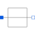

ShortShort cut branch |

|
Information
This information is part of the Modelica Standard Library maintained by the Modelica Association.
The model Short is a simple short cut branch. That means the voltage drop between both pins is zero. This device could be neglected if both pins are combined to one node. Besides connecting the nodes of both pins this device has no further function.
Connectors (2)
| p |
Type: PositivePin Description: Positive electrical pin |
|
|---|---|---|
| n |
Type: NegativePin Description: Negative electrical pin |
Used in Components (1)
|
Modelica.Electrical.MultiPhase.Ideal Multiphase short cut branch |